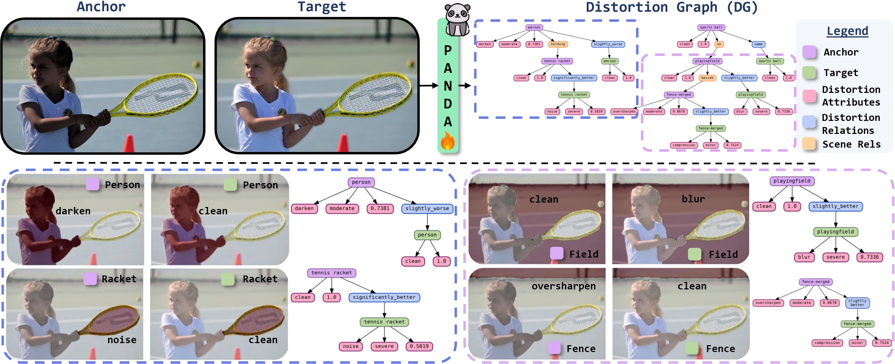
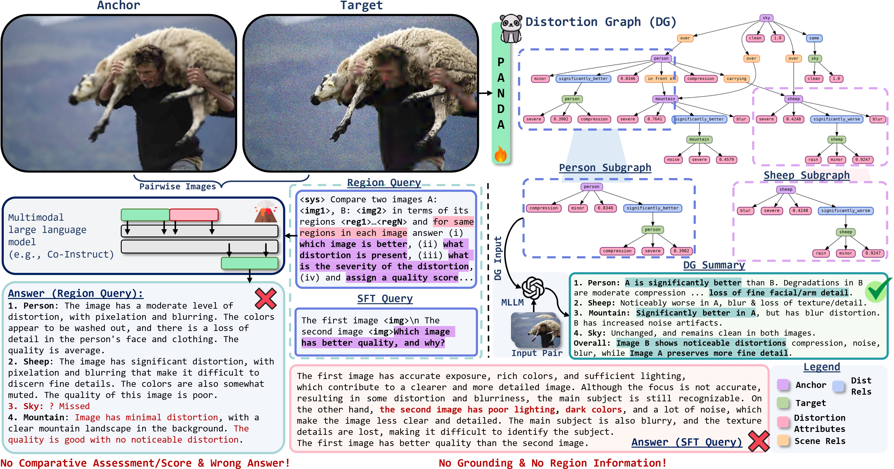
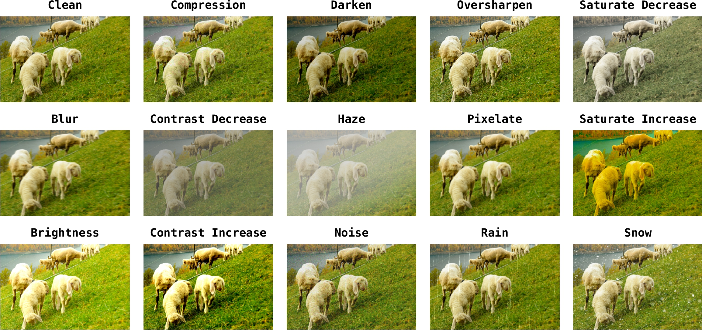
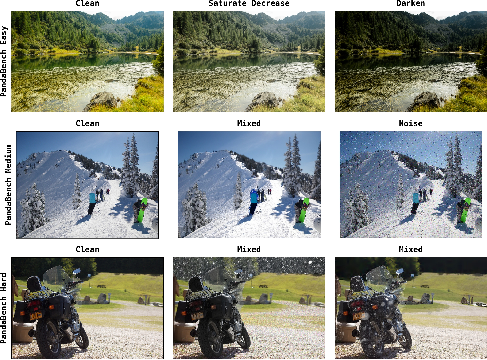

Overview
Problem
Most comparative assessment methods operate at the whole-image level, while implicitly requiring region-level understanding. This becomes a bottleneck for fine-grained reasoning about where (and how) degradations differ across two images.
Core idea
Represent an image pair as a structured composition of matched regions, with edges capturing comparative relations and nodes capturing distortion attributes (type, severity, quality score). This is the Distortion Graph (DG) formalism.

Distortion Graph (DG)
What DG represents
DG is a region-grounded topology over an image pair: nodes correspond to regions (with masks), and inter-image edges encode how the anchor region compares to its matched target region.
What DG stores per region
- Distortion Type (e.g., Noise, Blur, Rain)
- Severity Level (e.g., Minor, Moderate)
- Quality Score (e.g., 0.10, 0.34, 0.78)
- Comparative Relation (e.g., Slightly Better/Worse)

Dataset & Benchmark
PandaSet
A region-level dataset built to supervise DG prediction, spanning distortion types, severity, and region quality.
PandaBench
Benchmark splits (Easy / Medium / Hard) derived from PandaSet to evaluate region-wise comparative reasoning.


BibTeX
@inproceedings{panoptic_pairwise_distortion_graph,
title = {Panoptic Pairwise Distortion Graph},
author = {Muhammad Kamran Janjua and Abdul Wahab and Bahador Rashidi},
booktitle = {International Conference on Learning Representations (ICLR)},
year = {2026},
}